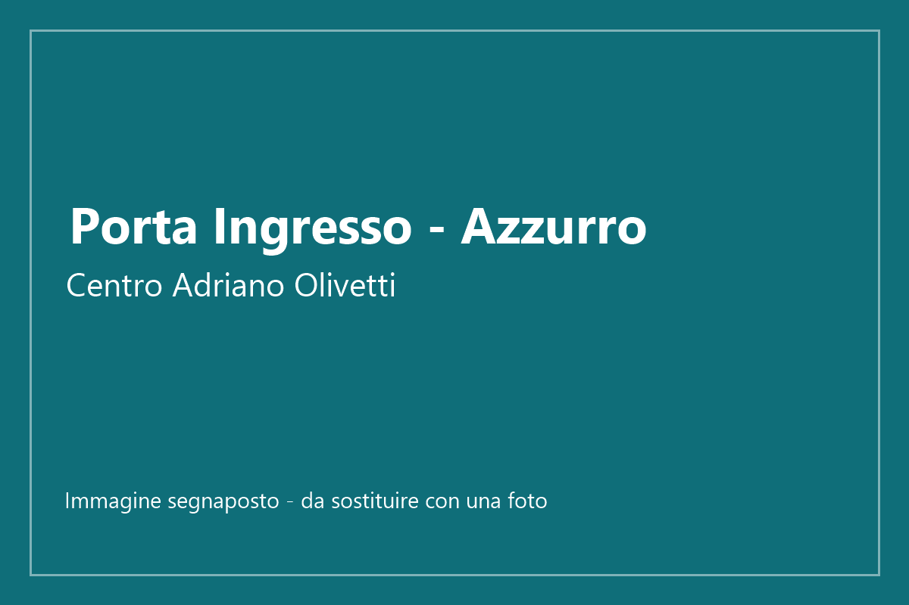

Questo non è solo un edificio: è uno spazio pensato per trasformare Imola in un luogo di formazione, innovazione e opportunità.
La sede di Via Aspromonte ospita il Centro di Innovazione e Formazione Adriano Olivetti, inaugurato nel 2025 negli spazi riqualificati dell'ex Zoo Acquario.
È la sede del corso di Cybersecurity Specialist di Imola e rappresenta il legame tra territorio, imprese e formazione tecnica avanzata.
Qui gli studenti trovano aule, laboratori e spazi pensati per l'apprendimento pratico e la collaborazione.

Ultimo aggiornamento: 13/11/2026